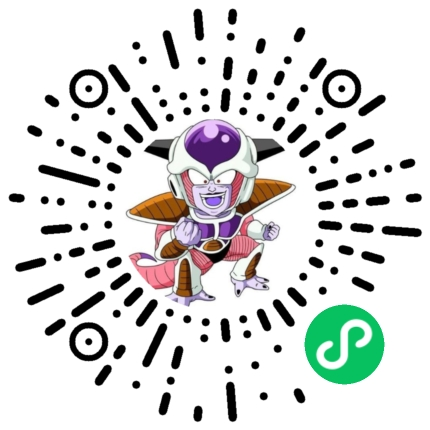

- 负责项目日常管理工作。
- 负责项目验收、应用上线整体工作。负责项目软件架构、总体设计、需求分析设计。
- 对客户提出的开发需求进行可行性评估和风险评估，并制定相应开发计划。
- 协调项目团队，进行人员分工与任务管理，确保项目按时按质完成。
- 负责技术文档编写及维护，定期Review代码，参与需求分析、可研、概设详设、文档编写、项目实施、系统维护等工作。
java.lang.Runtime实现)。针对业务SDK没有提供Python版本，增加Python调用Java功能(Jpype库实现)。
- 负责对代码库进行封装维护，根据业务需求对代码库进行更新，提高代码复用率，减少冗余。
- 负责软件系统的日常维护和故障排除，后端系统的架构设计以及研发流程的改进及优化。
- 参与业务功能表结构设计，在部分业务不明确的情况下最大程度的保留表结构的扩展性及兼容性。
- 负责后台相关子系统Restful接口及前端页面的开发。
使用Hexo+Matery主题搭建的个人博客。 https://github.com/xmxe/blog 第三方授权登录，如使用GitHub账号登录第三方网站。 https://github.com/xmxe/oauth2 将主流技术集成到Spring Boot，如Sa-Token,Shiro,CAS单点登陆,Jasypt,Sharding-jdbc,WebSocket等。 https://github.com/xmxe/springboot 测试主流微服务组件及新生组件，如Apache ShenYu,Spring Cloud Netflix, Spring Cloud Alibaba,Spring Cloud Tencent等。 https://github.com/xmxe/springcloud
JVM知识点 https://blog-aok.pages.dev/posts/be5a099f7894/ Spring中的Bean对象 https://blog-aok.pages.dev/posts/b435885d7cf1/ 消息队列技术选型 https://blog-aok.pages.dev/posts/69be9f826425/ Keepalived+Nginx高可用 https://blog-aok.pages.dev/posts/ad742aa7ce3a/ 更多文章请访问https://blog-aok.pages.dev/
微信小程序
vue实现的在线简历
hexo实现的在线博客
我具备深厚的技术背景和丰富的项目管理经验。具备出色的领导力和团队协作能力，我热爱技术事业，始终保持对新技术和新知识的探索精神。我相信，通过不断学习和实践，我能够带领团队在技术领域不断取得新的突破和成就。 希望能以有限的经验为贵司带来更多的价值。感谢您花时间阅读我的简历，期待能有机会和您共事。